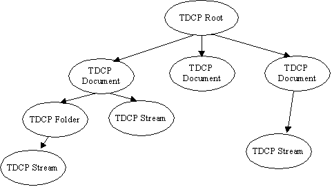

The Transient Document Content Provider
Preface
The Transient Document Content Provider (TDCP) implements a Content Provider for the Universal Content Broker (UCB). It provides access to the hierachical structure of the documents that are active in a running OpenOffice.org process. As long as a document was not closed, the TDCP can access it. All documents that have been loaded – regardless of their persistent document format--- or that have been created but not yet saved to any storage medium, are supported. The TDCP is not able to load any documents itself. This is exclusively done by the OpenOffice.org document handling framework. The document contents provided by the TDCP represent live data, which may differ from any persistent representation of the document, for instance, because the user modified the document after loading, but did not yet save it.
TDCP Contents
The TDCP provides four different types of contents: Stream, Folder, Document and Root.
A TDCP Stream is a content which represents a data stream of an Office document. It is contained in a TDCP Folder or TDCP Document. A TDCP Stream has no children.
A TDCP Folder is a container for other TDCP Folders and TDCP Streams. It may be contained in another TDCP Folder or in a TDCP Document.
A TDCP Document represents the root folder of a transient document. It is a container for other TDCP Folders and TDCP Streams. It is always a child of the TDCP Root.
There is at most one instance of a TDCP Root at a time. All other TDCP contents are children of this folder. The TDCP Root Folder can contain only TDCP Documents. It has the fixed URL „vnd.sun.star.tdoc:/“.

Creation Of New TDCP Contents
TDCP Folders and TDCP Documents implement the interface XContentCreator. TDCP Streams and TDCP Folders support the command „insert“; the TDCP Root and TDCP Documents do not. TDCP Folders and TDCP Documents can create new TDCP Folders and TDCP Streams. To create a new child of a TDCP Folder or TDCP Document:
Let the parent folder create a new content by calling its createNewContent-method. The content type to use for new folders is application/vnd.sun.star.tdoc-folder. To create a new stream, use the type string application/vnd.sun.star.tdoc-stream.
Set a title at the new folder/stream. ( Let the new child execute a setPropertyValues – command, which sets at least the property „Title“ to a non-empty value ).
Let the new child ( not the parent! ) execute the command „insert“. This will commit the creation process. For streams, you need to supply the implementation of an XInputStream with the command's parameters, that provides access to the stream data.
Another, more convenient way for creating streams is simply to assemble the URL for the new content ( last part of the path will become the title of the new stream ) and to obtain a Content object for that URL from the UCB. Then let the content execute the command "insert". The command will fail, if you set the command's parameter "ReplaceExisting" to false and there is already a stream with the title given by the content's URL.
URL Scheme for TDCP Contents
Each TDCP content has an identifier corresponding to the following scheme:
tdcp-URL = "vnd.sun.star.tdoc:" abs-path
abs-path = +( "/" segment )
segment = *( pchar )
pchar = unreserved | escaped | ":" | "@" | "&" | "="
| "+" | "$" | ","
unreserved = alphanum | mark
mark = "-" | "_" | "." | "!" | "~" | "*" | "'" | "("
| ")"
escaped = "%" hex hex
Examples:
|
URL |
Comment |
|---|---|
|
vnd.sun.star.tdoc:/ |
The TDCP Root |
|
vnd.sun.star.tdoc:/22 |
The document with the id 22 |
|
vnd.sun.star.tdoc:/22/ |
The document with the id 22 |
|
vnd.sun.star.tdoc:/42/folder/subfolder |
The folder/stream named subfolder contained in folder named folder, which is contained in the document with the id 42 |
|
vnd.sun.star.tdoc:/42/folder/subfolder/ |
The folder named subfolder contained in folder named folder, which is contained in the document with the id 42 (final slash identifies that resource is a folder) |
|
vnd.sun.star.tdoc:/1/content.xml |
The stream/folder named content.xml contained in the document with the id 1 |
Appendix
The following table gives an overview of the different TDCP contents.
|
|
UCB Type (returned by XContent::getContentType ) |
Properties |
Commands |
Interfaces |
|---|---|---|---|---|
|
Stream |
application/vnd.sun.star.tdoc-stream |
[readonly] string ContentType [readonly] boolean IsDocument [readonly] boolean IsFolder string Title |
getCommandInfo getPropertySetInfo getPropertyValues setPropertyValues insert delete open
|
lang::XTypeProvider, lang::XServiceInfo, lang::XComponent, ucb::XContent, ucb::XCommandProcessor, beans::XPropertiesChangeNotifier, beans::XPropertyContainer, beans::XPropertySetInfoChangeNotifier, ucb::XCommandInfoChangeNotifier, container::XChild |
|
Folder |
application/vnd.sun.star.tdoc-folder |
[readonly] string ContentType [readonly] boolean IsDocument [readonly] boolean IsFolder string Title [readonly] embed::XStorage Storage** |
getCommandInfo getPropertySetInfo getPropertyValues setPropertyValues insert delete open transfer* |
same as TDCP Stream plus ucb::XContentCreator |
|
Document |
application/vnd.sun.star.tdoc-document |
[readonly] string ContentType [readonly] boolean IsDocument [readonly] boolean IsFolder [readonly] string Title [readonly] frame::XModel DocumentModel |
getCommandInfo getPropertySetInfo getPropertyValues setPropertyValues open transfer* |
same as TDCP Stream plus ucb::XContentCreator |
|
Root |
application/vnd.sun.star.tdoc-root |
[readonly] string ContentType [readonly] boolean IsDocument [readonly] boolean IsFolder [readonly] string Title (value: always an empty string) |
getCommandInfo getPropertySetInfo getPropertyValues setPropertyValues open |
same as TDCP Stream (not Folder!) |
*) The „transfer“ command only transfers TDCP documents, TDCP folders and TDCP streams to TDCP folders or TDCP documents. It does not handle contents with a URL scheme other than the TDOC URL scheme.
**) always a reference to a storage opened in read-only mode. No write operations are possible. UCB content must be used for operations that modify the storage (if equivalent functionality is available) or a writable storage must be obtained from somewhere else.